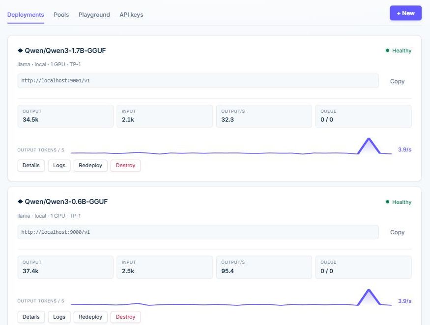

Run  Qwen
Qwen
on your own machine
Swap api.openai.com for localhost.
One command. Your hardware, your data, no bill per token.
Your code does not change
It speaks the OpenAI API. Point it at your own machine and carry on.
client = OpenAI(
base_url="https://api.openai.com/v1",
api_key="sk-proj-...",
)
client.chat.completions.create(
model="gpt-4o-mini",
messages=[...],
)client = OpenAI(
base_url="http://localhost:8001/v1",
api_key="sk-sursum-...",
)
client.chat.completions.create(
model="Qwen/Qwen3-8B-GGUF",
messages=[...],
)Streaming, JSON schema, vision, tools — the same fields you already send. See the API docs →

Deploy in one click
Pick a model, click Deploy, and get a link any OpenAI-compatible app can use. The platform decides the runtime, ports and GPU for you.
One command setup
One line in the terminal and it is running. The Python environment, the llama.cpp binary and the GPU setup come with it, hidden.
GPU detected for you
NVIDIA GPU with Docker runs vLLM; a GPU without it runs llama.cpp on CUDA; anything else runs on the CPU. It also sizes the model to the VRAM you have, and lets you pick the GGUF quantization by name.
Router across models
Create a pool of 2+ models and the router picks the best one per message. Judge escalation, rule-based routing and round-robin included.
How it works
Create your account
Email and password, stored locally in your machine.
Pick a model
Qwen, DeepSeek, Mistral, Muse-Glimmer or Bonsai from the catalog — or paste any Hugging Face model, down to the exact GGUF file.
Deploy and use
Your deployment gets a URL and ready-made Python, JS and curl snippets.
Runs on your hardware
Models stay on your machine. No cloud API, no token metering, no data leaving your machine.
vLLM
High-throughput inference on NVIDIA GPUs with Docker. Prefix caching enabled by default.
llama.cpp
GGUF models on any machine, vision models included, and a model bigger than your VRAM is split between GPU and CPU instead of refusing to start.
Your other computers, in the same dashboard
SursumAI Pro is the same app, unlocked by an account — nothing to reinstall and nothing else to learn.
Subscribe and copy a token
Click Go Pro, sign in with GitHub, subscribe, create a token.
Paste it in your dashboard
The Machines tab appears at once — no new download, no restart.
Add a server by its SSH line
Paste what your provider shows you. SursumAI installs itself there, opens a private tunnel and the models on it join your pools and your API.
Numbers, and where they came from
Measured on rented GPUs while building this. No vendor slides — the method is in the repository and you can re-run it.
Every one of these is reproducible: the model, the card and the settings are named in the docs.
Does the router actually work?
We measured it: 100 GSM8K maths problems on a single 6 GB NVIDIA GPU, every answer checked against the right number — no LLM grading another.
| Setup | Correct | Time per message |
|---|---|---|
| Qwen3-0.6B alone | 69% | 12 s |
| Router 0.6B + 8B, 1.7B judge | 87% | 39 s |
| Qwen3-8B alone | 93% | 107 s |
The router pays when the strong model is far more expensive than the cheap one; with a 0.6B + 1.7B pool it saved nothing. Times assume every model stays loaded. Method, raw data and what didn’t work →
What people run on it
Documents that cannot leave
Case files, medical records, contracts. A schema in, clean JSON out, and the text never reaches anyone else's server. JSON output →
An internal assistant
One URL and one API key for your whole team, with the models you chose. Several people at once cost the GPU almost nothing extra. How batching works →
A pipeline that got expensive
Classification, extraction, summaries by the thousand. The small model takes what it can and the big one is woken only when needed. Routing →
The hard way vs. this
Renting an API
- Pay per token, forever
- Your prompts leave the building
- Prices and models change under you
Doing it yourself
- A day of Docker, CUDA and VRAM maths
- Out of memory at 2am
- One model, one machine, no API
SursumAI
- One command
- An OpenAI URL and a key
- Nothing leaves your machine
- Too big for it? Rent a GPU — same URL
Ollama runs one model. LiteLLM routes you to someone else’s. This is the provider, and it is yours.
Pricing
Everything on your own machine is free, forever. Pro is a subscription for running models on the servers you already have.
Free
- Unlimited models on your machine
- Router, pools and playground
- OpenAI-compatible API with account keys
- GPU detected and used automatically
- Open source (MIT)
- Community support on GitHub
Pro Beta
- Everything in Free
- Deploy to your own servers over SSH — unlimited machines
- Same install, unlocked by a token — nothing to reinstall
- One dashboard and one API for the models on all of them
- Nothing exposed on those machines: a private SSH tunnel
- Email support
- Cancel anytime — Pro keeps working until the end of what you paid
No per-user or per-token pricing: your models run on your hardware, and your prompts never pass through us.
Questions people ask first
- Does my data really stay here?
- Yes. The models run on hardware you control and the prompts never reach us. The only thing our servers know is whether an account subscribes — the free edition does not talk to us at all.
- What do I need to run it?
- Any Linux, macOS or Windows with WSL. An NVIDIA GPU makes it fast; without one it still runs on the CPU, slower. The installer brings everything else.
- Which models?
- Anything on Hugging Face: Qwen, DeepSeek, Mistral, Llama, your own fine-tune. GGUF on llama.cpp, safetensors on vLLM, and it picks the runtime for you.
- How fast will it be on my machine?
- Divide your GPU's memory bandwidth by the size of the model file and take 70 %. That predicted all three cards we measured within 10 %.
- Is it really open source?
- MIT, the whole app. Pro is a subscription that unlocks running models on your other servers over SSH; everything else is free forever and always will be.
- What happens if you disappear?
- Nothing stops. The app is on your machine and the code is on GitHub. Even Pro keeps working for 30 days offline, because the answer about your account is signed and dated.
Install in one command
Runs on Linux, macOS and WSL (Windows — open Ubuntu, not PowerShell). No Docker, Python or GPU knowledge needed. The same command installs Free and Pro.
Read the docs · Run sursumai and it opens http://localhost:3000 — create your account there and deploy your first model. sursumai update upgrades it, sursumai uninstall removes it.
Your models. Your machine. Your URL.
Deploy your first self-hosted model in one command.
Install free